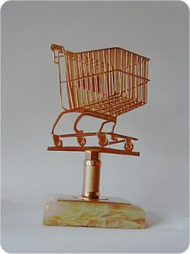
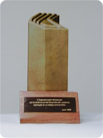
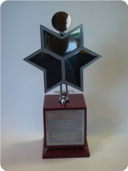

Grupo Valcan
MÁS DE 60 AÑOS CREANDO VALOR
Inversiones en Chile y Estados Unidos
Conoce nuestros rubros
Grupo Valcan
Inversiones en Chile y Estados Unidos
Conoce nuestros rubrosNuestros Rubros
Administración y arriendo de propiedades comerciales y residenciales
Desarrollo integral de proyectos residenciales, comerciales y de usos mixtos
Explotación forestal, agrícola y producción de lácteos
Financiamiento y desarrollo de proyectos de energías renovables no convencionales
Fondos de inversión privado para financiar y apoyar proyectos innovadores
Nuestra Historia

Los comienzos del grupo empresarial se remontan a los años 1965 cuando su fundador Valentín Cantergiani inaugura un local de alimento con el nombre de "Establecimientos Montecarlo" que tenía una superficie de 38m2 y dos trabajadores.
Con los años se inauguran varios locales más, sin embargo en el año 1982 el grupo decide transformar uno de sus locales más emblemáticos, ubicado en el centro de Santiago de Chile, a un Supermercado, llamándolo Supermercados Montecarlo.
En el año 2004 esta cadena ya era una de las más importantes del país, contaba con más de 16 puntos de venta, ventas anuales por más de USD235 millones y más de 3000 trabajadores. Se caracterizaba por ser una de las cadenas más eficientes del país.
En Noviembre del año 2004 el grupo decide vender la operación de retail a la empresa Cencosud, conservando la propiedad de los locales y centros comerciales, los que fueron entregados en arriendo.
Así en ese año nace la empresa de Inversiones Valcan cuyo principal objetivo es administrar los flujos producto de la operación de venta.
Fuente: IBBO Investigación
La clave del éxito está en las personas. Independiente de liderar un desarrollo inmobiliario o una cadena de supermercados, nuestra filosofía se basa en contratar a los mejores profesionales de cada industria.
Legado
Valentín Cantergiani inaugura el primer local de alimentos con 38m² y dos trabajadores
El grupo transforma su local emblemático en Santiago en un supermercado
Reconocida como cadena destacada del año por la Asociación de Supermercados de Chile
Premio de la Cámara Nacional de Comercio por excelencia en el retail
Venta de la operación retail a Cencosud. Se funda Valcan para administrar las inversiones del grupo
Renovación de contratos con Cencosud por 20 años más
Más de 60 años de trayectoria con presencia en Real Estate, Energía, Agrícola y Private Equity
Legado
Dentro de los logros obtenidos en los 22 años de retail se puede destacar:

Cadena destacada del año 1997

Premio año 2000

Otorgado por la Cámara Nacional de Comercio